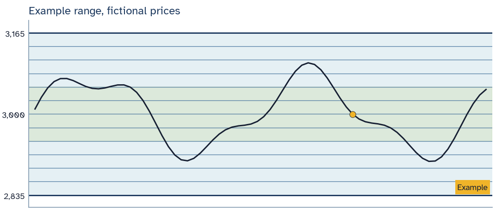
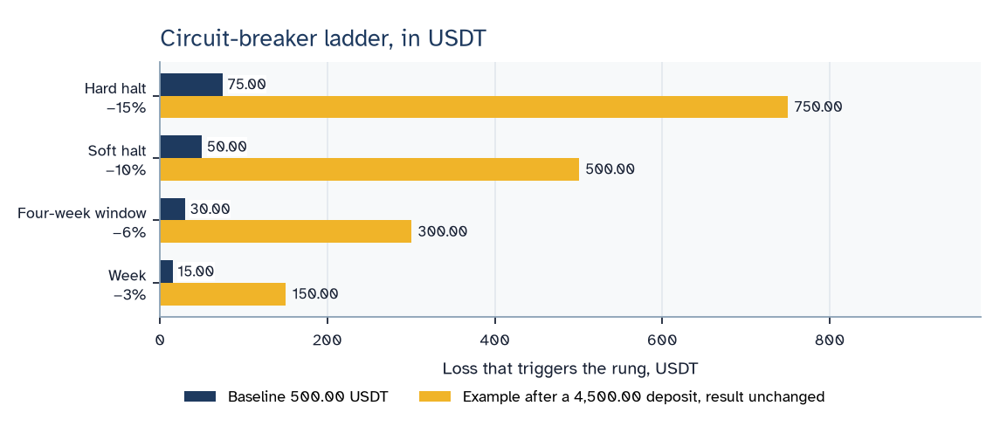
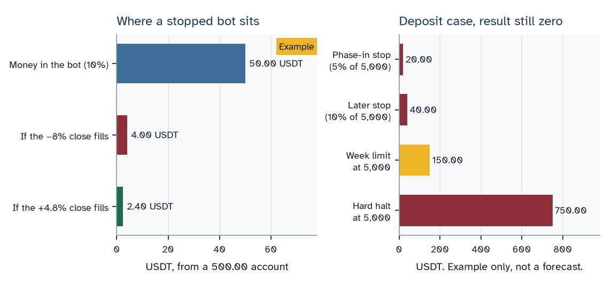
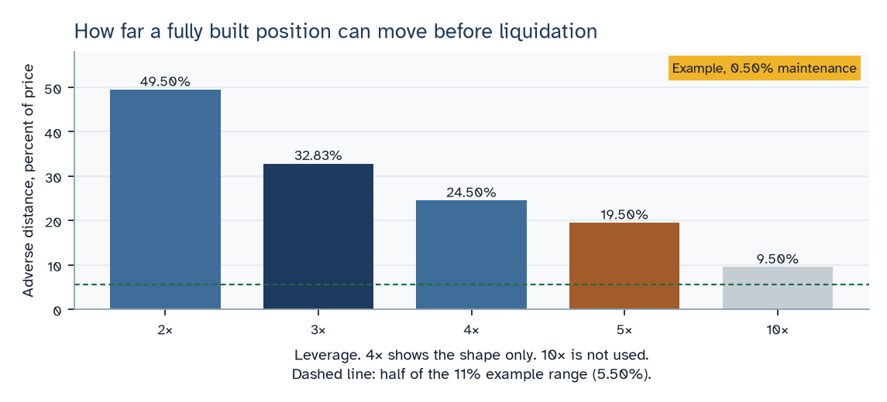
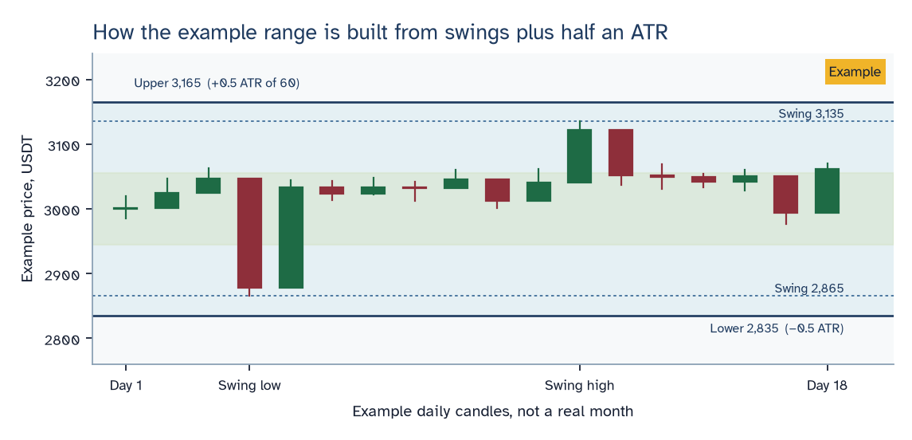
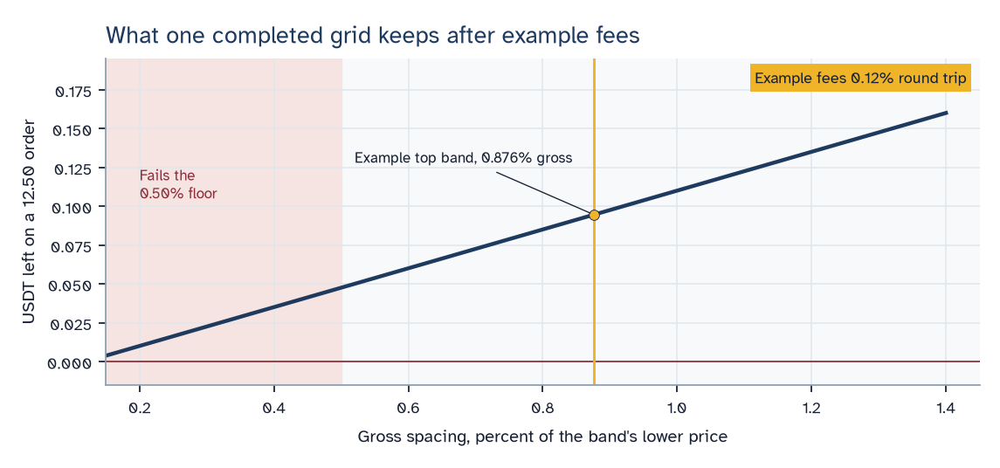
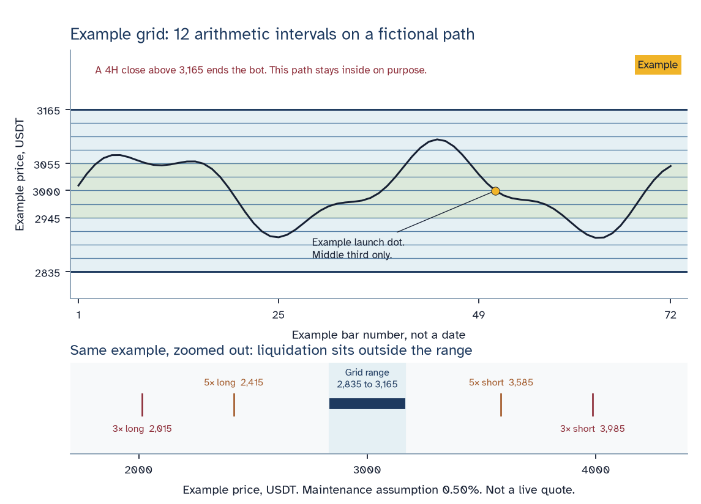
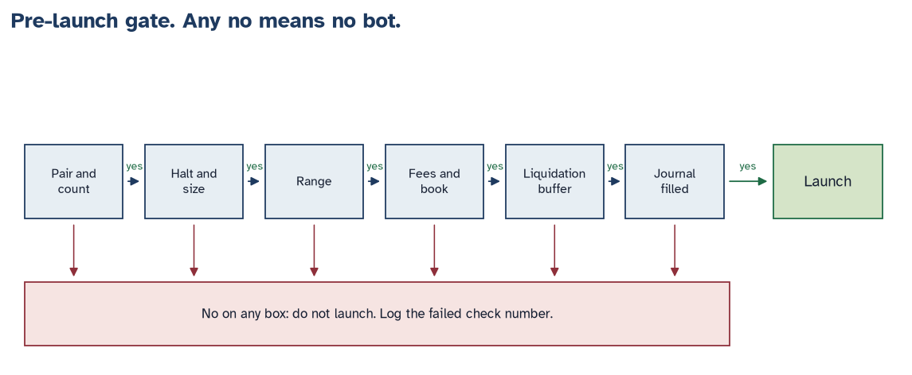
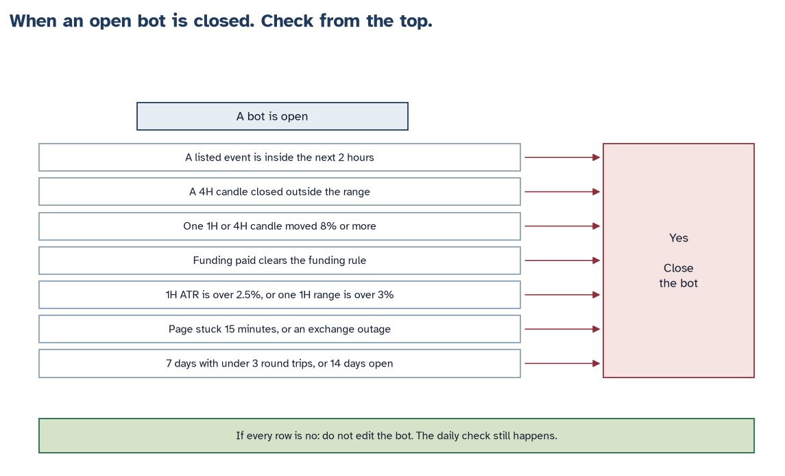
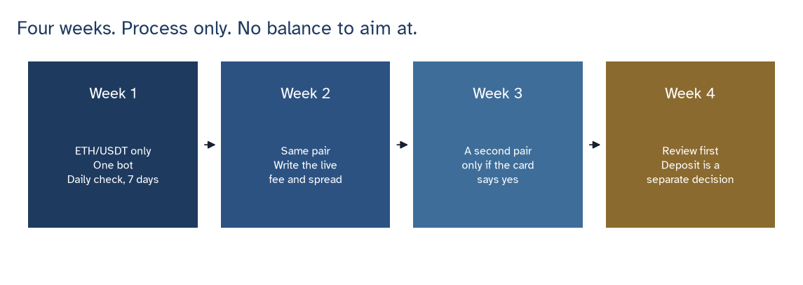

Prepared for Arty, reviewed with Stewart
A four-week operating plan for a first Pionex futures grid. Some notes say Artie. This plan says Arty.

Inside
One failed check means no bot.
[[disclaimer]]
This plan keeps your pairs, your [[equity]] USDT, and a neutral futures grid. It replaces the earlier weekly account goal with things you can tick off: checks, journal rows, and reviews.
Arty marks the chart, runs every check, and presses every button. Stewart does the weekly review. Stewart does not log in, and does not launch, edit, or close a bot.
If a label on the Pionex screen is unclear, screenshot it and wait. Do not guess. Do not put an account number, a password, or an API key in the journal or in a message.
Most mix-ups in the old draft came from treating every percent as a move in the coin. They are not.
| Figure | Percent of what | At [[equity]] USDT |
|---|---|---|
| −8% close | The money inside that one bot | [[stop_usd]] on a [[margin]] bot |
| +4.8% close | The money inside that one bot | [[tp_usd]] on a [[margin]] bot |
| 10% cap | The whole account | [[margin]] in the bot |
| −3% week | Equity at Monday 00:00 | [[weekly]] |
| −6% window | Equity at the start of the four weeks | [[window]] |
| −10% and −15% | The baseline, measured on the trading result | [[soft]] and [[hard]] |
The +4.8% close is smaller than the −8% close. One stop ([[stop_usd]]) is larger than one +4.8% close ([[tp_usd]]). Do not open extra bots to make the difference back.
Grid. A set of buy and sell orders placed at fixed steps inside a price range.
Interval. The gap between two neighbouring orders. Ten intervals means eleven prices.
Arithmetic. Every interval is the same number of USDT, not the same percent.
Neutral futures grid. Orders on both sides. It still holds a coin position as price moves, and that position can be liquidated.
Margin. The USDT you assign to one bot. It is not the whole account.
Equity. The futures account value, including the open bot’s result.
Trading result. Equity now, minus net cash you have put in. It starts at 0.00, not at 500.
Baseline. The account size the halt lines use. It starts at [[equity]] USDT.
Liquidation. The exchange closes the position because the loss used up the margin. You do not choose the moment.
Funding. A fee between longs and shorts, usually every 8 hours. It is not the trading fee.
ATR. Average true range. Here it means ATR(14): a 14-period measure of how far candles typically stretch.
Round trip. One buy fill and a later sell fill, or the other way around. Fees are charged on both sides.
Isolated margin. Only the money in that bot backs the position. Cross margin can reach the rest of the account.
These six bases only, each against USDT. ETH/USDT is the only pair in weeks 1 and 2. That is a process rule for a first month. It is not a claim that ETH is the most liquid coin, and it is not a ranking.
| Base | Quote | When |
|---|---|---|
| ETH | USDT | Weeks 1 and 2. Later only if it still passes the checks. |
| SOL | USDT | Week 3 or 4, and only if that week’s card names it. |
| DOGE | USDT | Week 3 or 4, and only if that week’s card names it. |
| XRP | USDT | Week 3 or 4, and only if that week’s card names it. |
| ZEC | USDT | Week 3 or 4, and only if that week’s card names it. |
| NEAR | USDT | Week 3 or 4, and only if that week’s card names it. |
The old note “DODG” means DOGE, Dogecoin. If the screen does not show DOGE against USDT, skip it. Do not search for DODG. Do not pick a coin with a similar name.
Two bots can lose on the same day, because these coins often move together. Two stop-closes in a row still start the 48-hour pause, even if they happen hours apart. A stop-close is a −8% close, a liquidation, or a manual close with a negative result.
Write your timezone on the sign-off page. Monday means 00:00 in that timezone. A “48-hour” wait means 48 clock hours.
Trading result = equity now − net cash in. Net cash in starts at [[equity]] and rises when you deposit. A deposit does not repair a loss. Equity [[equity]] and no deposit means the trading result is 0.00.

| Rung | Rule | At [[equity]] | Example at [[equity_after]] |
|---|---|---|---|
| Week, −3% | No new bot until next Monday. An open bot stays only if no close rule is true. | [[weekly]] | [[after_weekly]] |
| Window, −6% | The next four-week window uses a 5% margin cap. Today’s bot is not closed for this line alone. | [[window]] | [[after_window]] |
| Soft halt, −10% | No new baseline. Margin cap becomes 5% now. Do not use new cash for a bot. | [[soft]] | [[after_soft]] |
| Hard halt, −15% | Close every bot today. No new bot until a review writes a restart. Deposit stays unused. | [[hard]] | [[after_hard]] |
Week loss = Monday equity − equity now − deposits this week + withdrawals this week. If that number is negative, the week is up: use zero in the launch test on page 5.
Half means 5% instead of 10%. Do not halve twice. A soft halt and a next-window half and a deposit phase-in all mean the same 5% cap, not 2.5%.
Use the strongest rung that is on. A hard halt overrides everything else.
Margin = baseline × the cap. The cap is 10%, unless a phase-in or a halt has set it to 5%. Planned loss if the −8% close fills = margin × 0.08. That planned loss must stay at or under 1% of the baseline.
Check: 10% × 8% = [[stop_share]] of the account, and [[stop_share]] is under 1%. On [[equity]] USDT the 1% line is [[risk_cap]] USDT, and the planned stop is [[stop_usd]].

| Step | Starter account | Deposit case |
|---|---|---|
| Equity used for the example | [[equity]] | [[equity_after]] |
| Margin at 10% | [[margin]] | [[full_margin]] |
| Margin at the 5% cap | 25.00 | [[phase_margin]] |
| Planned stop at 10% margin | [[stop_usd]] ([[stop_share]]) | [[full_stop]] ([[full_share]]) |
| Planned stop at 5% margin | 2.00 | [[phase_stop]] ([[phase_share]]) |
| +4.8% close, 10% margin | [[tp_usd]] ([[tp_share]]) | 24.00 |
Before you launch, add three numbers. Use zero for the week loss if the week is up.
If the sum is over the weekly limit, do not launch. Worked case at [[equity]]: three stops already booked are [[stops_three]], which is inside the [[weekly]] limit. A fourth planned stop makes [[stops_four]], which is over [[weekly]], so it is not opened. Two open bots reserve [[two_bots]] together, which is [[two_bots_share]] of [[equity]]. Weeks 1 and 2 still allow only one bot.
Suppose the screen’s minimum is [[min_example]] USDT. [[min_example]] × 0.08 = [[min_fail]]. That is over the [[risk_cap]] USDT cap on a [[equity]] account, so you skip. Do not round a minimum down. If your screen shows a different minimum, multiply that minimum by 0.08 and compare it with 1% of the baseline.
Fees and funding are not a reason to raise the margin. The planned loss ignores any grid fills you hope to see. Read the live minimum, the live fee, and the live funding rate anyway. They are checks on pages 8 and 10, not a reason to size up.
Leverage does not change the planned USDT loss if the −8% close fills, because that close is a percent of margin. Leverage changes how small a price move reaches that close, and how close liquidation is. A fast move can jump past the close. That is why the buffer below is mandatory.

Planning formulas, for a position that is already fully built. A grid builds in steps, so the preview can differ. If they differ, trust the preview, and still require the buffer.
Example only, at a fictional price of [[mid]], not a quote: 3× liquidation [[liq3_long]] and [[liq3_short]]. 5× liquidation [[liq5_long]] and [[liq5_short]]. The −8% move at 3× is [[mid]] − [[move3_usd]] = 2,920 and [[mid]] + [[move3_usd]] = 3,080. Both sit inside the example range of [[lower]] to [[upper]]. The −8% close is not the edge of the range.
Long liquidation must be at or below lower × 0.97. Short liquidation must be at or above upper × 1.03. On the example bounds that is [[buf_low]] and [[buf_high]]. Both 3× and 5× pass this particular 11% example. Passing it does not allow 5× by itself. If the preview shows no liquidation price, do not launch.
Stay at 3× for the month unless that whole list is yes. A good week is not one of the lines.
Do these steps on the daily chart first, then check the 4H and the 1H. Do not type the example prices into Pionex. They exist so the arithmetic can be checked.

In that example, daily ATR % is [[atr_pct]]. Four times that is [[atr_4x]], which is under 11%, so the ETH floor of 11% is the minimum. Eight times is [[atr_8x]], and the 11% width is under that maximum, so the width test passes. A larger ATR could fail the same picture. Middle third: [[third_low]] to [[third_high]].
Also skip the launch if any of the last five daily volumes is over 2 × the 20-day average volume. That is a climax filter. It is not a reason to prefer high volume.
Use 10, 11, or 12 intervals. Price step = (upper − lower) ÷ intervals. Gross step % on a band = price step ÷ the lower price of that band × 100. On an arithmetic grid the smallest percent is the top band. Call that the worst gross step.
Round-trip cost % = 2 × the live fee per side + the live spread. Net = worst gross − round-trip cost. Launch only if the worst gross step is at least 0.50% and the net is at least 0.30%. If you cannot select arithmetic spacing, do not launch.
The pictures below use a planning assumption you must replace: fee [[fee_side]] each side, spread [[spread_assumed]], so the round trip is [[round_trip]]. If the live fee is higher, the 0.30% net floor can be the test that fails first.

| Example line, fictional [[lower]] to [[upper]], 12 intervals | Figure |
|---|---|
| Price step, [[span]] ÷ 12 | [[step]] USDT |
| Worst gross step, top band, [[step]] ÷ 3,137.50 | [[worst_gross]] |
| Planning round trip | [[round_trip]] |
| Net step | [[net_step]] |
| One grid order, [[margin]] × 3 ÷ 12 | [[notional]] USDT |
| Gross on that order at the worst step | [[gross_grid]] USDT |
| Fee plus spread on that order | [[cost_grid]] USDT |
| Left after those costs | [[net_grid]] USDT |
[[net_grid]] USDT is what this fictional order keeps after the example costs. It is under one tenth of one USDT. It is not a goal for the account. If the bot screen shows a different order size, rerun the last three lines with that size. The book check wants at least [[depth]] USDT on the best bid and on the best ask, because that is 20 × [[notional]]. At a price of [[mid]], a 0.08% spread is [[spread_px]] USDT. Wider than 0.08%, and you skip.
The path is invented. It is drawn to stay inside the range so it cannot be mistaken for a result. Your chart will not look like this. Use it to learn which line does which job.


For the first 24 to 48 hours, do not change the range, the interval count, the leverage, or the margin, unless a row below says close. “Leave it alone” does not mean skip the daily check.

The −8% and +4.8% closes are set at launch and left there. When either fills, the bot is finished. Do not widen, shift, or top up.
One row per bot, started before launch and finished the day it closes. One daily line even when the action is “no change.” Keep the screenshot of the preview with the row.
| Bot row field | What you write |
|---|---|
| Opened, timezone | Date and time. Use the sign-off timezone. |
| Symbol and product | Copied from the screen. Isolated or cross. |
| Equity just before launch | USDT, including other open results. |
| Margin and cap | USDT, and whether the cap was 10% or 5%. |
| Leverage | 3 or 5. If 5, the page 6 gates are all yes. |
| Lower, upper, mid, width | Prices and the width percent. |
| Daily ATR | USDT and percent of price. |
| Intervals and step | Count, USDT step, worst gross %, live fee %, spread %, net %. |
| Closes | −8% and +4.8% of bot money. Note the field label you saw. |
| Liquidation | Long price, short price, buffer yes or no. |
| Context | 24h price change, next event and hours away, checklist 22/22. |
| Closed | Date and time. Exit: +4.8, −8, 4H, 8% candle, funding, news, time, wick, outer band, manual, exchange, liquidation. |
| Money | Result on the bot, fees, funding, and the result after fees and funding, all in USDT. |
| Rule | Yes, or the check number that broke. One sentence, or “no change.” |
A scratch, for the weekly count only, is a result after fees and funding between −0.50% and +0.50% of that bot’s margin. On a [[margin]] bot that is −0.25 to +0.25 USDT. A scratch is not a win, and it is not a stop. It still has the 24-hour wait on that pair.
Book the review before week 1 starts. Bring the journal and the Pionex history. Read fills, fees, and funding. Do not review from the bot headline alone. The review is finished only when this card is filled and both of you have initialled it.
| Tick | Bring this to Stewart |
|---|---|
| ____ | Week dates, and daily checks done: ____ / 7 |
| ____ | Bots opened: ____ Bots skipped: ____ Each skip has a check number |
| ____ | Rule breaks, by check number, or “none” |
| ____ | Monday equity ________ Equity now ________ Deposits this week ________ |
| ____ | Trading result ________ Strongest ladder rung touched: none / week / window / soft / hard |
| ____ | Fees ________ Funding ________ both taken from history |
| ____ | Pairs allowed next week. ETH stays first until the card names one other pair. |
| ____ | Max bots ____ Margin cap ____% Leverage ____ “5× allowed” only if page 6 is yes |
| ____ | Event dates and clock times for the next seven days |
| ____ | One process note to try, or “none.” Do not change a risk number. |
| ____ | Arty initials ________ Stewart initials ________ Date ________ |
Count the four cards and the daily checks. List every rule break. Write the trading result and the halt state. Then, and only then, choose one line: transfer, transfer but do not use, or do not transfer. The deposit page is that decision. It is not a reward for a result.

| Week | Done means |
|---|---|
| 1 | The review is already booked. Daily check 7 days. ETH/USDT only. One bot at most. Every skip has a check number. Zero launches that miss a check. |
| 2 | Same limits. The journal has the live fee, the live spread, and a one-line note on the book. No second pair. |
| 3 | The card is filled before any second pair. Two bots only if the card says so. Same size maths. |
| 4 | The four-week review is finished before any transfer. The deposit line is written: transfer, transfer but do not use, or do not transfer. |
Adopting the new table does widen the halt, from [[soft]] USDT to [[after_soft]] USDT in the example below. That is a real increase in what you can lose. It is allowed only through the list above. It does not erase the old trading result.
Worked case, only if the [[equity]] is still intact and the trading result is zero. Equity becomes [[equity_after]]. Next Monday the week limit is [[after_weekly]]. The new window limit is [[after_window]]. Soft halt −[[after_soft]]. Hard halt −[[after_hard]]. Phase-in margin [[phase_margin]], planned stop [[phase_stop]] ([[phase_share]]). After the 7 days, margin [[full_margin]], planned stop [[full_stop]] ([[full_share]]). If the screen is not [[equity_after]], throw these dollars out and multiply the equity you see by 0.03, 0.06, 0.10, 0.15, 0.05, and 0.10. Then multiply the margin by 0.08.
| Daily check time | ____________________ | Timezone | ____________________ |
| Quote asset is USDT | Yes ____ | Baseline at the start | [[equity]] USDT |
| Week 1 review booked | Date ____________ | Arty places every order | Yes |
Arty confirms that every bot is set by Arty on Pionex. Stewart supports the weekly review and does not place, edit, or close a bot. If a screen label is unclear, Arty sends a screenshot and does not launch.
| Arty, trader | Stewart, weekly review |
|---|---|
| Signature ___________________________ | Signature ___________________________ |
| Date ________________________________ | Date ________________________________ |
Symbol string. Bot type name. Minimum investment. Fee per side. Funding rate, and the next funding time. Isolated or cross. Liquidation prices. Whether the −8% field is a result on bot money or a price move. Spread. Size on the best bid and best ask. The order size the bot will actually use. If any of these cannot be read, do not launch.
[[disclaimer]]